La Concentration Linéaire¶
Description générale¶
La concentration linéaire consiste à concentrer le soleil sur un long tube: des miroirs, dans la longueur, réfléchissent sur un tube. Comme le soleil bouge en deux dimensions, et que le récepteur (eg., le tube), a une dimension, il faut que les collecteurs (eg., les miroirs) bougent en une dimension, si l’on souhaite obtenir une bonne visée. Ces technologies solaires permettent de monter, au niveau industriel, à 400°C/500°C. Il en existe deux types motorisés (permettant une bonne visée), ainsi qu’une adaptation fixe, moins efficace et ne nécessitant pas de moteur.
Le Parabolique (PTC)¶
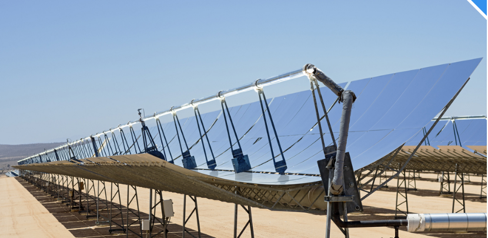
Le concentrateur parabolique (en anglais: parabolic trough collector, ou encore PTC) est consituté d’un miroir parabolique réfléchissant sur un tube isolé. De par la forme des miroirs, c’est la technologie de concentration linéaire atteignant les plus hauts rendements optiques, et donc les plus fortes concentrations/efficacités/températures.
Néanmoins, la forme des miroirs est complexe à fabriquer, et faire tourner l’intégralité du collecteur crée de véritables problèmes de structures, ainsi que de prises au vent. C’est pourquoi des alternatives moins chers ont été recherchés, comme le Fresnel Linéaire ci-dessous.
Le Fresnel Linéaire (LFR)¶
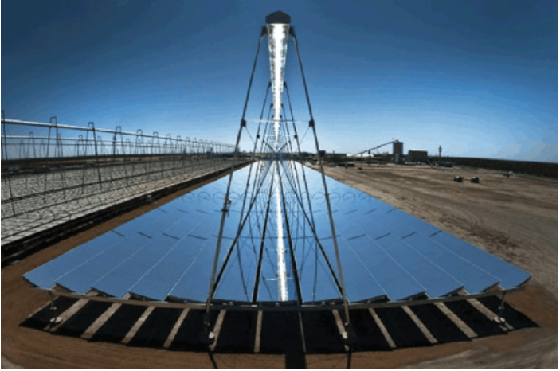
Le Fresnel Linéaire (en anglais Linear Fresnel, ou encore LFR), est constitué de multiples miroirs réfléchissant tous vers l’absorbeur situé au dessus. Dans cette configuration, le tube est fixe, et les miroirs plus petits. Il faut néanmoins plus de moteurs pour le faire tourner. Un deuxième réflecteur est situé au-dessus du tube afin de rattraper ce qui rate le tube.
L’idée est inspiré des lentilles Fresnels: considérant qu’il était trop difficile de faire une courbe parfaite pour une loupe et que le poids de la lentille était un problème, Fresnel eut l’idée de casser les arêtes à intervalles réguliers, comme montrés ci-dessous.
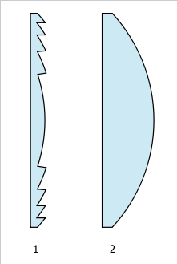
Le parabolique fixe¶
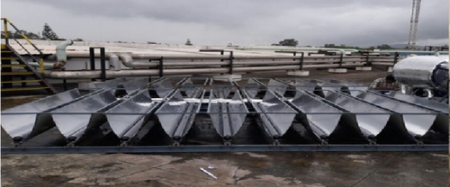
L’idée est de réussir à concentrer une partie du soleil sur des petits tubes. Cette technologie se trouve à la lisière entre panneaux plans et concentration linéaire; ne la connaissant pas beaucoup, je ne peux pas trop en parler. Néanmoins, il me semble que l’efficacité est meilleure que sur des panneaux plans – cela doit dépendre également de la quantité d’énergie diffuse, ainsi que bien évidemment de la fabrication.
Efficacité Optique¶
Le calcul de l’efficacité optique nécessite de connaître la position du soleil, ainsi que celle du collecteur. Afin de calculer l’efficacité optique, des corrélations donnant le IAM (Incidence Angle Modifyer) sont disponibles. Il faut également prendre en compte l’ombrage entre les rangées, et la réflectivité des miroirs.
Le calcul de l’efficacité optique se décompose alors en:
\(\eta_0\): c’est l’efficacité optique à incidence normale, lorsque le soleil se trouve face au capteur.
Effet cosinus
Incidence Angle Modifyer: les miroirs peuvent réfléchir derrière le tube si le soleil est bas, par exemple. Ces corrélations, données par les constructeurs, permettent une estimation précise du rendement optique. En gros, cela correspond à ce qui est mal visé (ou encore spillage losses)
Ombrage: si le soleil est bas, les lignes de miroirs peuvent se faire de l’ombre à tout un chacun.
Réflectivité: dépend du miroir et de son état (propreté, ..)
Description de la position du collecteur¶
La position du collecteur peut être décrite par 3 angles: deux angles permettent de décrire le sol, et un autre angle permettant de décrire la position du collecteur relativement au sol.
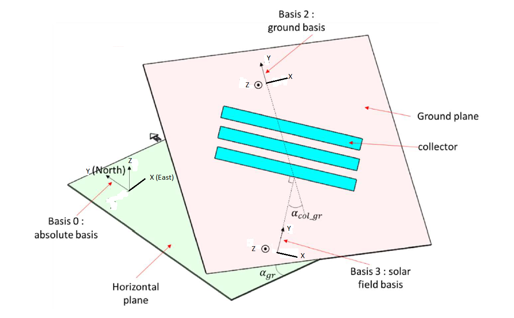
Le sol peut être défini par son azimuth et son inclination: un angle \(\alpha_{sol} = \alpha_{gr}\), l’azimuth, correspondant à l’angle entre le nord et le projeté de la normale du sol sur le plan horizontal; un angle \(\beta_{sol}=\beta_{gr}\) correspondant à l’angle entre le sol et l’horizontale.
De même, on va définir l’azimuth du collecteur par rapport au sol \(\alpha_{col-sol}\) comme l’angle entre le “nord” local (càd, la direction montante) et l’axe du collecteur: en effet, dans la concentration linéaire, il y a un axe évident.
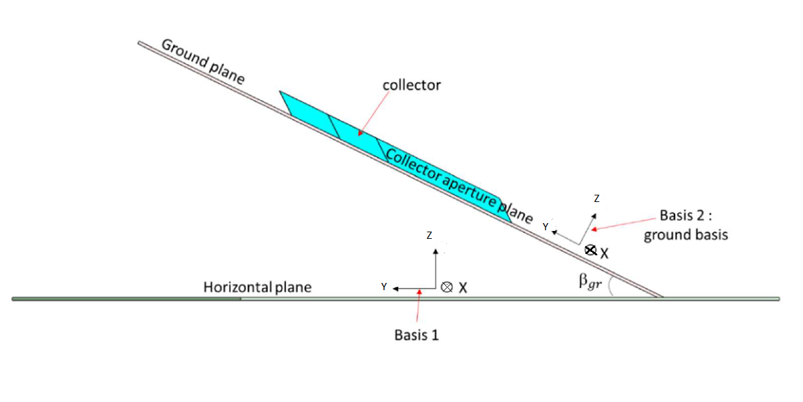
Il est également possible de définir l’inclinaison du collecteur \(\beta_{col-sol}\). Néanmoins, cela ne me semble intéressant que pour les panneaux plans, bien que cela puisse être utile pour d’autres cas, où l’on souhaiterait surélever les collecteurs.
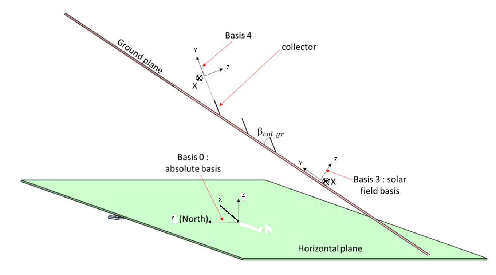
Calculs de changement de base¶
Il y a 3 rotations à effectuer pour arriver dans la base du champ solaire. A partir de cela, il devient alors possible de définir l’orientation du soleil par rapport au collecteur, et d’utiliser les relations génériques donnant l’efficacité optique.
Les différentes rotations et leurs matrices respectives sont:
Rotation autour de Z de \(-\alpha_{sol}\), \(P_{B_0}^{B_1} = \begin{pmatrix} \cos(\alpha_{sol}) & \sin(\alpha_{sol}) & 0 \\ -\sin(\alpha_{sol}) & \cos(\alpha_{sol}) & 0 \\ 0 & 0 & 1 \end{pmatrix}\)
Rotation autour de X de \(\beta_{sol}\), \(P_{B_1}^{B_2} = \begin{pmatrix} 1 & 0 & 0 \\ 0 & \cos(\beta_{sol}) & -\sin(\beta_{sol}) \\ 0 & \sin(\beta_{sol}) & \cos(\beta_{sol}) \end{pmatrix}\)
Rotation autour de Z de \(-\alpha_{col-sol}\), \(P_{B_2}^{B_3} = \begin{pmatrix} \cos(\alpha_{col-sol}) & \sin(\alpha_{col-sol}) & 0 \\ -\sin(\alpha_{col-sol}) & \cos(\alpha_{col-sol}) & 0 \\ 0 & 0 & 1 \end{pmatrix}\)
Position du soleil relativement au capteur¶
On obtient le vecteur solaire dans la base du champ solaire via \(\vec{s}_3 = P_{B_3}^{B_0} . \vec{s}_0\). De là, deux angles sont définis: l’angle longitudinal \(\theta_L\) et l’angle transversale \(\theta_T\). Ces angles correspondent à l’angle entre la verticale et le vecteur solaire projeté dans le plan longitudinal et transversale respectivement. Ces plans sont définis comme tels:
Plan longitudinal: contient l’axe du capteur et la verticale.
Plan transversal: contient la perpendiculaire à l’axe du capteur et la verticale.
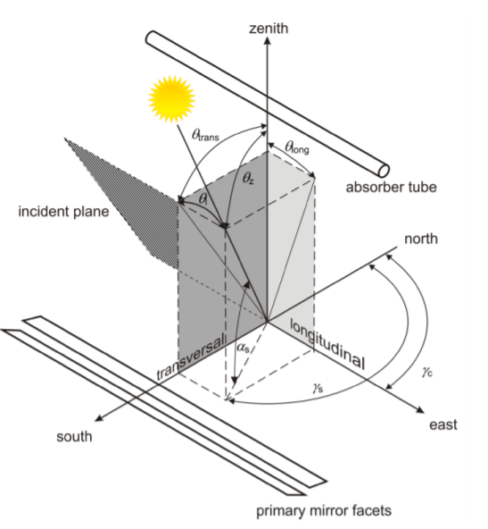
De cela, il est possible de trouver l’angle longitudinal et transversale. Les deux relations seront:
\(\theta_L = \arcsin(s_y)\)
\(\theta_T = \arcsin(\frac{s_x}{\cos(\theta_L})\)
Avec \(s_x,s_y\) les coordonnées du vecteur solaire dans la base du champ solaire.
Cas particulier du PTC: Comme le PTC pivote pour se mettre face au soleil, on aura alors toujours \(\theta_T = 0°\)!!
Effet cosinus¶
L’effet cosinus, ainsi désigné car en général calculé à l’aide d’un cosinus, correspond à la part d’énergie solaire reçue par le capteur par rapport à son énergie solaire. Cela revient à l’aire effective vue par le soleil, comme montré dans l’image ci-dessous.
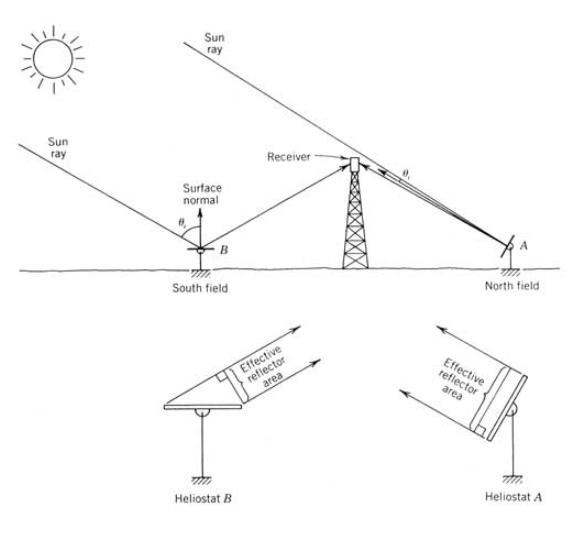
Comme montré sur l’image, cela correspond alors à l’aire vue par le soleil. Cela se ressent très simplement lorsque l’on penche sa main face au soleil, ou encore lorsque l’on sent le soleil taper sur les épaules et le crâne au lieu du corps, et inversement selon l’heure de la journée.
IAM - Incidence Angle Modifyer¶
Des corrélations donnent une partie de l’efficacité optique en fonction des angles transversaux et longitudinaux. Il faut ici séparer le cas du Fresnel et du PTC: le IAM du LFR inclue l’effet cosinus, alors que celui du PTC non. Les éléments présents dans le IAM du Fresnel seront les pertes pour problème de visée, d’ombrage entre les lignes, par exemple.
Cas du LFR: \(IAMCosine = IAM_L(\theta_L)*IAM_T(\theta_T)\)
Cas du PTC: \(IAMCosine = IAM_L(\theta_L)*\cos(\theta_L)\)
Ombrage¶
L’ombrage se fait entre les lignes du champ solaire: chaque ligne risque de faire de l’ombre à la suivante. Pour le calculer, il est nécessaire de se placer en base 3.
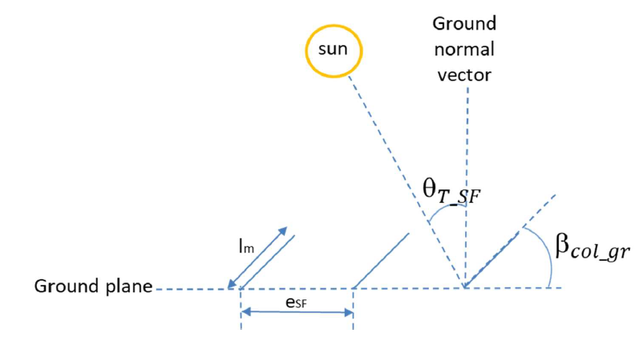
Pour un élément restant plan comme le Fresnel, l’ombrage résultant d’une ligne sur les autres est très petit: lorsque cela arrive, le soleil est presque à l’horizontale, et n’émet pas d’énergies. Le PTC, par contre, se fait de l’ombre.
\(\eta_{ombre}=\frac{e_{SF}}{l_m}*\cos(\theta_T)\)
Réflectivité¶
La réflectivité du miroir (notée \(\rho\)) dépend principalement du matériau réfléchissant utilisé et de sa propreté. Il est à noter que la réflectivité des métaux dépend de la longueur d’onde: il est donc intéressant d’utiliser un métal réfléchissant dans la longueur d’onde voulue. En général, pour calculer la réflectivité d’un miroir solaire, on aime pondérer par le spectre solaire.
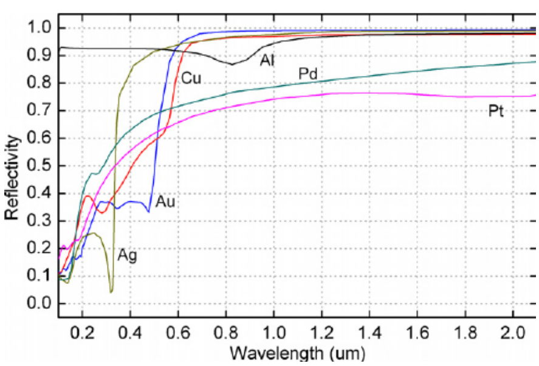
Conclusion sur l’efficacité optique¶
La formule finale donnant l’efficacité optique peut s’écrire: \(\eta_{opt}(\vec{s}) = \eta_0 * IAMCosine(\vec{s})*\eta_{ombre}(\vec{s})*\rho\). Cette forme est néanmoins simplifiée, car d’autres pertes sont régulièrement prises en compte.
Bilan thermique¶
Deux bilans thermiques sont généralement effectués, 0D ou 1D. Le degré de précision est bien évidemment meilleur avec le 1D, mais il reste plus difficile à implémenter: pour des calculs rapides, cela n’est pas nécessaire.
Bilan 1D¶
Une écriture de l’équation différentielle sur un élément de taille \(dz\) va donner:
\(\dot{m}*(h(z+dz)-h(z)) = \eta_{opt}*\alpha*DNI*l_c*dz - U_{ext}*P_{rec}*dz*(T_p-T_{amb})-\epsilon*\sigma*(T_p^4-T_{amb}^4)*P_{rec}*dz\)
Avec \(\dot{m}\) le débit massique en kg/s, \(h(z)\) l’enthalpie du fluide en J/kg, \(\eta_{opt}\) l’efficacité optique, \(\alpha\) le coefficient d’absorption solaire, DNI l’irradiation normal direct, \(l_c\) la largeur d’ouverture du collecteur,\(U_{ext}\) le coefficient de pertes thermiques du récepteurs en W/m².K,\(P_{rec}\) le périmètre du récepteur, \(\epsilon\) l’émission thermique de la paroi, \(T_p\) la température de paroi en K, \(T_{amb}\) la température extérieure en K, \(\sigma\) la constante de Boltzmann.
Pour obtenir la température de paroi, il est nécessaire de faire un autre bilan thermique sur la paroi. Cette méthode étant assez lourde, les constructeurs fournissent des coefficients de perte. Ces coefficients de perte sont en général donnés pour un module entier.
Avec l’utilisation de bilan sur le module, l’équation s’écrit alors:
\(\dot{m}*(h_{out}-h_{in})= \eta_{opt}*\alpha*DNI*A_{module}-\dot{q}_{pertes}\),
avec \(\dot{q}_{pertes} = a_1 * (\frac{T_{in}+T_{out}}{2}-T_{amb})+a_2*(\frac{T_{in}+T_{out}}{2}-T_{amb})^2+a_3*(\frac{T_{in}+T_{out}}{2}-T_{amb})^3+a_4*(\frac{T_{in}+T_{out}}{2}-T_{amb})^4\)
Une résolution précise consiste alors à:
Imposer le débit et en déduire la température
Imposer la température et en déduire le débit
Il est possible d’écrire \(h=C_p(T)*T\), puis de résoudre, néanmoins cela reste complexe. Une approximation classique serait de prendre \(C_p=constante\) sur le module (à la température d’entrée?).
Ensuite, il est nécessaire de répéter ce processus sur la ligne de module; ce faisant, prendre la température d’entrée d’un module comme celle de sortie de l’autre.
Bilan 0D¶
Un bilan thermique sur le récepteur donne: \(P_{in} = P_{utile} + P_{pertes}\), avec \(P_{in}\) la puissance en entrée, \(P_{utile}\) la puissance récupérée dans le fluide et \(P_{pertes}\) les pertes thermiques.
La puissance en entrée \(P_{in}\)¶
\(P_{in} = DNI*\eta_{opt}*A_{collecteur}\), avec DNI la Direct Normal Irradiation ou encore Irradiation normale direct en W/m², \(\eta_{opt}\) l’efficacité optique comme décrite ci-dessus et \(A_{collecteur}\) la surface du collecteur.
La puissance utile \(P_{utile}\)¶
Cela correspond à l’énergie récupérée par le fluide. Elle s’écrit \(P_{utile} = \dot{m}*(h_{out}-h_{in})\), avec \(\dot{m}\)